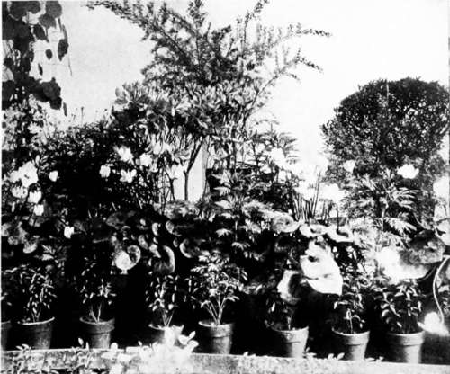

XVI. Plant Rooms
Description
This section is from the book "Indoor Gardening", by Eben E. Rexford. Also available from Amazon: Indoor Gardening.
XVI. Plant Rooms
WHILE plants can be grown with great satisfaction in the ordinary living-room if one is willing to give them the proper amount of care and attention, it is quite true that they can be grown much more satisfactorily in rooms where the air and temperature are under better control. In the living-room we have to compromise between the plants we grow and its human occupants, but where our plants can have a room all their own, matters can be regulated to suit their requirements, and many of the drawbacks which operate against plants in the living-room can be avoided altogether. Under such conditions it is possible to grow many kinds of plants to a degree of perfection impossible to attain in the ordinary dwelling.
Real greenhouses, even if small, are considerably expensive, and it is often difficult, if not impossible, to add them to a dwelling in such a manner as to give entire satisfaction. However, where it can be done, I would advise it, for the result will surely be far more satisfactory than any other method of plant-growing, for reasons already given, and many more that could be urged in its favor. But where the real greenhouse is out of the question, I would strongly advocate the claims to consideration of a room built expressly for plants.
We expend more money on the ordinary bay-window, in an effort to make it ornamental from an architectural point of view, than would be necessary in building a room large enough to accommodate several times as many plants as can be grown in the bay-window of the usual style. Such a room need not be very expensive. It ought not to cost more than any other room of similar size, as the sash and glass used will not be more expensive, in most places, than the boards, lath, and plaster entering into the construction of the ordinary room. If a glass roof is added-and have one, if possible, if you have a plant-room built- the glass and sash-bars necessary for it ought not to cost more than the rafters, sheathing-boards, and shingles of the ordinary roof. The aim should be to use glass everywhere it is possible to do so; consequently the lumber-bill-an important feature in building nowadays-will be reduced to a minimum. Really very little lumber will be required-simply the framework of the room, and flooring, with a small amount of boarding below the sash. A concrete floor can be put in at a less expense than one of wood, and the room will be all the better for it, so that economy can be practised here as elsewhere. The sides and ends, from within two or three feet of the floor to the roof, should be filled with sash, with plain casings between each section. One will be surprised to find how reasonably such a room can be built when he sets out in search of practical information regarding it. Go to a competent builder with your plan, if you have any-if not ask him to make one for you-and let him give you an estimate on the cost of it before you decide that you can not afford it.
A Pleasing Window Arrangement.
If it does not seem advisable to attempt the construction of such a room, it may be that there is a veranda or piazza off the living or dining-room that can be converted into a plant-room without much trouble or expense. The first thing to consider is the exposure it affords. It should face the south, south-east, or east in order to give best results. A practical carpenter can tell you very nearly what it would cost to fill in its ends and side with glass, and make the walls below the sash, and the floor, frostproof. If the old roof is left on the room will not be nearly as satisfactory as it will be if a glass roof is substituted. But if the room is of good height tall plants can be grown in it very satisfactorily. The advantage of a glass roof is, you get light from above, as well as from the sides, and over-head light prevents your plants from being drawn toward the glass as they will be if no light reaches them from above.
The plant-room ought always to have a wide opening between it and whatever room it opens from, in order to afford the occupants of the dwelling a free view of the beauty we propose to put into it. This opening should be fitted with glazed doors, so that the plants can be shut off by themselves, when desired. This will be necessary in controlling temperature and regulating the moisture of the air. In rooms shut off from the view of the family much of the pleasure the plants are capable of giving is wasted, because they can not be seen unless a visit is made to the place. Where there is nothing to obstruct the view from living-room to plant-room, we seem to live among the flowers, and winter loses much of its usual dreariness because we have a bit of imprisoned summer constantly before us.
In such a room water can be used as freely as desirable without any fear of injury to carpets, curtains, or walls. By closing the doors between the room and the dwelling the temperature can be regulated to a nicety, and the air can be always kept moist enough to suit the plants inside. Insecticides can be used without the trouble of removing the plants to kitchen or bath-room. In short, the work of caring for one's plants is greatly lessened by having a special place for them. But the strongest argument in favor of the plant-room is-the facilities it affords for growing plants almost as well as they can be grown in the greenhouse proper.
Ventilation should be arranged for. I would suggest an outlet in the roof, made of six-inch pipe-of galvanized iron or tin-having a cap at its lower opening. If a stout spring runs from this cap well up into the pipe, it will be drawn tightly against the latter, as soon as tension is relaxed on the string by which you open it. This self-closing attachment prevents the admission of cold air from above, and confines the heat to the room at all times, when you do not deem it advisable to get rid of some of it. There should be openings below by which fresh air can be admitted. I would advise tin pipes, two inches across, running through the casings. These can be closed with a cap that fits snugly when outside air is not wanted. You will doubtless have use for all your ventilating attachments every day, for the facility with which fresh air can be supplied to rooms of this kind is one of the strong arguments in their favor.
To all flower-loving persons who are building a new home, let me give this advice. Plan for a plant-room. Never mind the bay-windows-which are almost always more ornamental than useful-but decide on having a place especially for plants.
Continue to:
- prev: XV. The Summer Care Of House-Plants. Continued
- Table of Contents
- next: XVII. Seedlings In The House